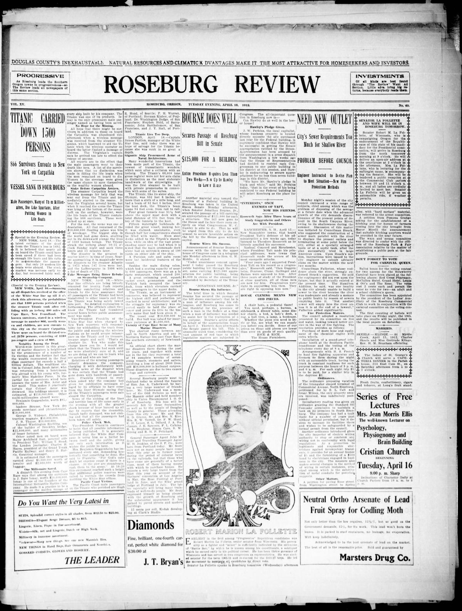
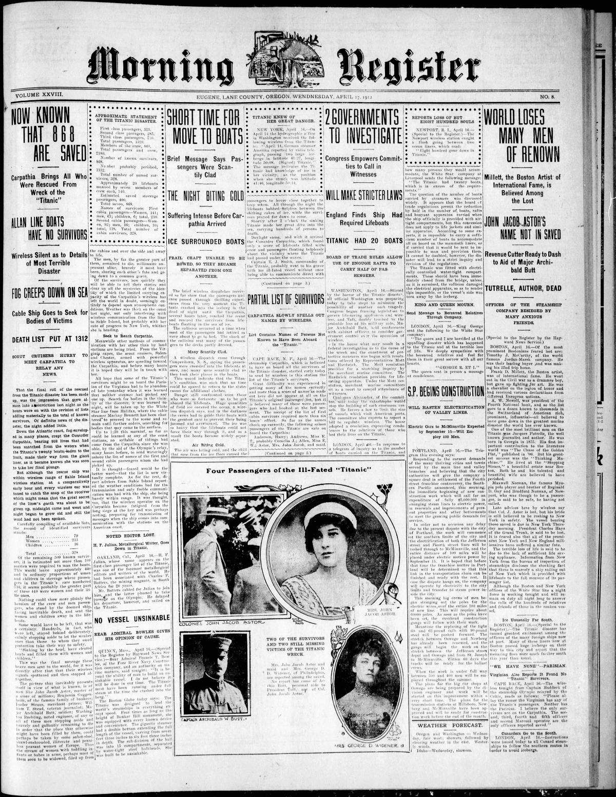

HN HN-382 · April 17, 1912 · Transportation & Maritime > Shipwrecks, Maritime Accidents & Losses > Sinkings, capsizings and foundering
Titanic early reports suggested rescued/saved passengers; 16 April Roseburg Review printed 866 survivors.
Identity-review candidate peers: HN-383:High
Class: Revision/retraction (R)
Recorded difference/concern: Titanic early reports suggested rescued/saved passengers; 16 April Roseburg Review printed 866 survivors.
Assessment: HN-382 and HN-383 are one sinking at successive reporting stages; survivor and lifeboat claims need timestamping.
Source links: https://oregonnews.uoregon.edu/lccn/2003260226/1912-04-16/ed-1/seq-1/ocr/ https://oregonnews.uoregon.edu/lccn/sn96088115/1912-04-17/ed-1/seq-1/ https://www.lva.virginia.gov/events/exhibitions/titanic/newspaper_coverage.php
Authentic scans retrieved from Historic Oregon Newspapers (University of Oregon). Article crops are located using the archive's own ALTO OCR word coordinates and rendered at native crop resolution; page scans are 1,200-pixel-wide renditions. No images were generated, mocked, or retouched.


Not yet acquired. Queued for provider-specific acquisition testing (see source-acquisition manifest).
URL (preserved verbatim): https://newspapers.library.in.gov/?a=d&d=JCDC19120417.2.13
Saved research report: Historical_Newspaper_Event_Research_378-402_2026-10-23.md
Evidence note: A newspaper report means a historical publication made a claim; it does not establish that claim as fact. Contemporary reporting is separated from later scholarly context and our own assessment.